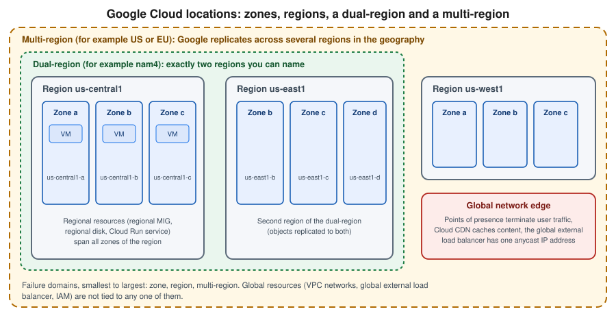

Google Cloud Global Infrastructure
|
This content was generated with the assistance of AI and should be verified against the official documentation before being relied on in production. |
Examples on this page target the gcloud CLI (the 586 line; 587.0.0 followed on 2026-09-29, checked 2026-10-01) and use us-central1 as a placeholder
region and my-project-id as a placeholder project. As of the checks made for this page (2026-10-01), the
Google Cloud locations page reports 43 regions, 130 zones and 200+ network
edge locations serving customers in 200+ countries and territories. Those figures change several times a year, so treat
them as a dated snapshot and read the live numbers on that page.
Google Cloud’s physical footprint is a hierarchy: regions contain zones, and a worldwide private network and edge connect them to users. Where a resource lands in that hierarchy decides its latency, its failure domain, its price and where its data legally resides, which is why nearly every later page of this section states a region. For the vocabulary behind these terms see Cloud concepts, and for configuring a default region in the gcloud CLI see Getting started.

Zones and regions
A region is an independent geographic area, identified by a code such as us-central1 (Iowa), europe-west1
(Belgium) or asia-northeast1 (Tokyo). A zone is a deployment area inside a region and is the basic failure domain:
treat one zone as a single point of failure for anything that lives only in it. A zone name is the region code plus a
letter, for example us-central1-a. Regions normally contain three or more zones in three or more physical data
centers; a few smaller regions are still expanding towards that, and the locations page lists the exceptions. Some
regions also expose specialized AI zones with a name such as us-west4-ai2b.
Regions are isolated from one another and zones are connected to each other inside a region by Google’s private network, so a multi-zone design is the baseline for high availability, and a multi-region design is a separate, more expensive decision. Unlike services that are scoped to one region, a project is not tied to a region at all: the same project holds resources in many regions.
In the Google Cloud console
-
Open the Google Cloud console and use the project picker at the top to choose the project.
-
Open Compute Engine → Settings → Zones (or VM instances → Create instance) to see the zones and regions your project can use. The Region and Zone drop-downs of the create form list them with their machine availability.
-
Open Cloud Run, Cloud SQL or any other product and choose a Region on its create form. Each product offers only the regions in which it is available.
-
In Cloud Shell, the same commands as the CLI section below work without installing anything; the first Compute Engine call asks to enable the API.
With the gcloud CLI
gcloud services enable compute.googleapis.com
# Regions, with quota usage and status
gcloud compute regions list
# Only the names, one per line
gcloud compute regions list --format="value(name)"
# Details of one region, including the zones it contains
gcloud compute regions describe us-central1
# Zones, optionally narrowed to a region or a name pattern
gcloud compute zones list
gcloud compute zones list --filter="region:us-central1" \
--format="table(name,status,region.basename())"
# Defaults so that you do not repeat --region and --zone
gcloud config set compute/region us-central1
gcloud config set compute/zone us-central1-aThe Compute Engine API lists the Compute Engine regions and zones; other products publish their own location lists,
described under Product availability below. A zone can report a status other than UP during an incident or a
turn-down, and the list shows the next planned maintenance, so check it before pinning automation to a zone.
Multi-regions and dual-regions
Some services replicate data across regions for you and expose that as a location instead of a region.
- Multi-region
-
A large geography managed by Google, for example
US,EUorASIAfor Cloud Storage and BigQuery. Data is redundantly stored in at least two regions inside the geography and the service survives the loss of a whole region. You do not choose the member regions, and the location code names a geography rather than a country. For instance the Cloud StorageEUmulti-region lies in European Union member states and not in London or Zurich. - Dual-region
-
Exactly two specific regions, supported by Cloud Storage. A predefined dual-region uses a fixed code such as
NAM4(Iowa and South Carolina) orEUR4, while a configurable dual-region lets you name your own pair inside one multi-region geography, for exampleus-east4andus-west1underUS. The optional turbo replication setting targets replication of new objects within 15 minutes.
Both give higher availability than a single region for a given storage class and both cost more than regional storage, plus inter-region replication charges depending on the service. Pick them when the recovery goal demands surviving a regional outage; otherwise a regional bucket is cheaper and simpler. Where a bucket lives is covered in depth in Cloud Storage, and multi-region databases in Managed databases overview.
In the Google Cloud console
-
Open Cloud Storage → Buckets → Create.
-
In Choose where to store your data, select the Location type: Region, Dual-region or Multi-region.
-
For a dual-region, choose a predefined pair or pick your own two regions, and optionally enable turbo replication.
-
The location type cannot be changed afterwards, so decide before creating the bucket.
With the gcloud CLI
gcloud services enable storage.googleapis.com
BUCKET="bookshelf-uploads-$(gcloud config get-value project)"
# Regional bucket
gcloud storage buckets create "gs://$BUCKET-regional" --location=us-central1
# Multi-region bucket
gcloud storage buckets create "gs://$BUCKET-multi" --location=US
# Predefined dual-region
gcloud storage buckets create "gs://$BUCKET-dual" --location=NAM4
# Configurable dual-region
gcloud storage buckets create "gs://$BUCKET-custom" --location=US \
--placement=us-east4,us-west1
# Check where a bucket lives
gcloud storage buckets describe "gs://$BUCKET-multi" --format="value(location,locationType)"The global network and the edge
Google runs a private, global backbone of terrestrial and subsea fiber that connects every region. Customers reach it through network edge locations, often called points of presence (PoPs), which terminate user connections close to the user and carry the traffic over Google’s backbone instead of the public internet. Edge locations also host caches for Cloud CDN and Media CDN and the entry points of the global external Application Load Balancer, which gives a service a single anycast IP address reachable worldwide. Edge capacity is not something you provision: it is a property of the services you use. Cloud CDN is covered in Cloud CDN and Media CDN and the load balancers in Load balancing and Cloud Armor.
Network service tiers choose how traffic between your resources and the internet travels:
- Premium Tier
-
The default. Traffic enters and leaves Google’s backbone at the edge location closest to the user, giving the best performance and the only tier that supports global load balancing and a global anycast address.
- Standard Tier
-
Traffic travels over the public internet for most of the path and enters or leaves Google’s network near the region. It is cheaper, has lower performance and availability characteristics, and is limited to regional external addresses and regional external load balancers.
Choose Standard only for cost-sensitive traffic that does not need worldwide reach. Pricing differs per tier and per destination, so use the dated network tiers pricing page and do not hard-code numbers.
In the Google Cloud console
-
Open Network Service Tiers (search for it in the console) → Overview to see the tier of each project and resource.
-
Open Network Service Tiers → Settings to change the project-wide default tier.
-
When creating a VM or an external IP address, expand Networking and pick the Network Service Tier.
With the gcloud CLI
# Default tier for new resources in the project
gcloud compute project-info update --default-network-tier=PREMIUM
# Reserve a regional external address in the Standard tier
gcloud compute addresses create bookshelf-ip-standard \
--region=us-central1 --network-tier=STANDARD
# Inspect it
gcloud compute addresses describe bookshelf-ip-standard \
--region=us-central1 --format="value(address,networkTier)"Beyond Google’s own regions
Google also offers the same stack in places the public regions do not reach. Google Distributed Cloud runs Google Cloud services on hardware in your data center or at the edge, in connected or air-gapped variants, managed through the same APIs where possible. Sovereign cloud offerings combine in-country regions or partner-operated clouds with extra controls over data residency, encryption keys and operator access. They are mostly sold by contract and are outside the scope of this guide; see the Google Distributed Cloud and sovereign cloud pages if a compliance rule demands one.
Scope of resources
Every Google Cloud resource has a scope that says where it exists and, therefore, how it fails. Knowing the scope tells you where to look for a resource, which flag selects it and what outage takes it down.
| Scope | Meaning | Examples |
|---|---|---|
Zonal |
Lives in one zone; a zone outage makes it unavailable. High availability is your job. |
Compute Engine VM instances, zonal persistent disks and Hyperdisk volumes, zonal GKE clusters, zonal managed instance groups. |
Regional |
Replicated across zones by the service or by your configuration; a region outage is the failure domain. |
Regional managed instance groups, regional disks, Cloud Run services and jobs, Cloud SQL high-availability instances, Artifact Registry repositories, subnets, regional GKE clusters, Cloud Storage regional buckets, Memorystore. |
Multi-regional |
Managed by Google across several regions; it survives the loss of one region. |
Cloud Storage multi-region and dual-region buckets, BigQuery multi-region datasets, Spanner multi-region configurations, Firestore multi-region locations, Artifact Registry multi-region repositories. |
Global |
One resource available everywhere, not tied to a region. |
VPC networks, firewall policies, routes, the global external Application Load Balancer and its anycast address, IAM policies, projects and organizations, DNS zones, Secret Manager secrets (global by default, regional optional). |
Pick the broadest scope that meets the availability goal and keep dependent resources close together: a VM can use a
zonal disk only in its own zone, a regional resource needs its dependencies in the same region to avoid cross-region
latency and transfer charges, and traffic between zones of one region has a lower cost than traffic between regions.
Scopes also appear in command names: gcloud compute instances takes --zone, gcloud run services takes --region
and gcloud compute networks takes neither because a VPC network is global.
Some tools can show everything of one kind regardless of location. For example gcloud compute instances list lists
VMs of every zone, while gcloud run services list --region=us-central1 is limited to one region. Cloud Asset
Inventory gives a project-wide view across all locations (see
Governance, security and compliance).
Choosing a region
No region is best for everything. Weigh these factors, roughly in this order:
- Data residency and compliance
-
Laws or contracts may require data to stay in a country or a geography. Pick a region (or a multi-region) that satisfies the rule first, then enforce it with the resource locations organization policy (see Resource hierarchy and projects).
- Latency to users and dependencies
-
Choose the region closest to your users or to the systems your workload talks to. Measure from the real locations rather than guessing, and use the global load balancer and CDN to serve distant users. Keep chatty components in the same region, and ideally in the same zone only when failure isolation does not matter.
- Product and feature availability
-
Not every product, machine family, GPU or TPU, or feature is in every region. Newer regions often launch with a subset. Check the product’s own locations page (see Product availability) before committing.
- Price
-
Prices differ per region for compute, storage and network egress. Compare with the Google Cloud pricing calculator by changing only the region.
- Carbon footprint
-
Google publishes the share of carbon-free energy used by each region, and the console marks low-carbon regions with a leaf icon in region pickers. The Region Picker tool combines carbon-free energy, price and latency to give a ranked suggestion.
- Resilience
-
Prefer a region with at least three zones, spread resources over two or three of them, and decide whether a second region is warranted by your recovery objectives.
For the Bookshelf scenario used throughout this section, us-central1 is a placeholder. A real deployment would
choose the region closest to its readers and to any data-residency rule, keep the stack in one region for simplicity
and use Cloud CDN for the static front end.
In the Google Cloud console
-
Open the pricing calculator and add the same product in several regions to compare the estimate.
-
In the product’s create form, hover over the leaf icon on a region to see its carbon-free energy percentage.
-
Create a trial resource, such as an empty bucket or a small VM, in the shortlisted regions and measure latency from your users' locations before deciding.
With the gcloud CLI
# Is a machine type offered in a zone? List zones that offer it
gcloud compute machine-types list --filter="name=e2-medium" \
--format="value(zone)" | sort
# Zones of one region offering a GPU type
gcloud compute accelerator-types list --filter="zone~us-central1"
# Region defaults for other products
gcloud config set run/region us-central1
gcloud config set artifacts/location us-central1Product availability
Each product documents where it runs. The pages worth bookmarking are the Google Cloud locations reference, the Compute Engine regions and zones page, the Cloud Run, Cloud SQL and GKE location pages, and the Cloud Storage locations page. A few services also have a CLI listing:
# Artifact Registry locations
gcloud artifacts locations list
# Cloud SQL instances show the region they were created in
gcloud sql instances list --format="table(name,region,databaseVersion)"Pricing, quotas and what changed
Pricing. Locations themselves are free; you pay for the resources in them, and the price often varies by region. The costs tied to geography are inter-zone, inter-region and internet egress traffic, multi-region and dual-region storage, and the network tier. There is no hard-coded price here: use the dated Google Cloud pricing pages and the calculator, and see Cost management and billing. The Always Free tier applies only in specific regions for some products, so check the free-tier page for the region you intend to use.
Quotas and limits. Many quotas are per region (CPUs, addresses, in-use disk) and some are global, so a project that
is out of quota in us-central1 may have headroom in another region. Quotas are visible in IAM & Admin → Quotas
& system limits and in gcloud compute regions describe.
Launch stages. A new region usually launches with a subset of products and then expands; individual features start in Preview before reaching General Availability. The product’s locations page and release notes say which.
Where older guides are outdated. Older guides still quote region counts that are long out of date and say nothing about newer regions or
AI zones. Take counts and region names from the live locations page, and prefer gcloud storage over the older gsutil for bucket
locations, as gsutil is legacy and will no longer ship with the gcloud CLI after March 2027.
Clean up
The buckets created above cost little but are not free. Delete them (Cloud Storage soft delete keeps removed objects for a retention period by default, so a deleted bucket’s objects may still be billed until it expires) and release the reserved address:
gcloud storage buckets delete "gs://$BUCKET-regional" "gs://$BUCKET-multi" \
"gs://$BUCKET-dual" "gs://$BUCKET-custom"
gcloud compute addresses delete bookshelf-ip-standard --region=us-central1